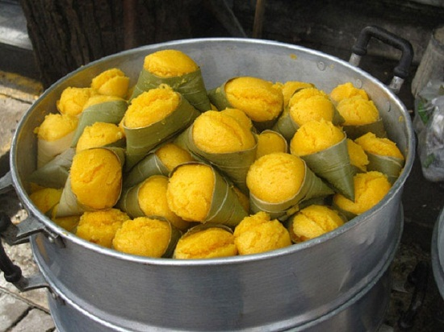

Chưa ở miền quê nào có loại bánh nghệ vàng ruộm, thơm bùi và dân dã như ở Thái Bình. Bánh nghệ được làm từ gạo tẻ chứ không phải là gạo nếp nên ăn nhiều không sợ bị nóng. Lại kết hợp với nghệ, nên bánh có giá trị dinh dưỡng và mùi vị rất riêng. Bánh nghệ được ăn nóng rất ngon, để bánh nguội sẽ hơi khô và kém thơm hơn. Được thưởng thức những chiếc bánh nghệ khi còn nóng, nhất là trong tiết trời lạnh thì không gì thích bằng.